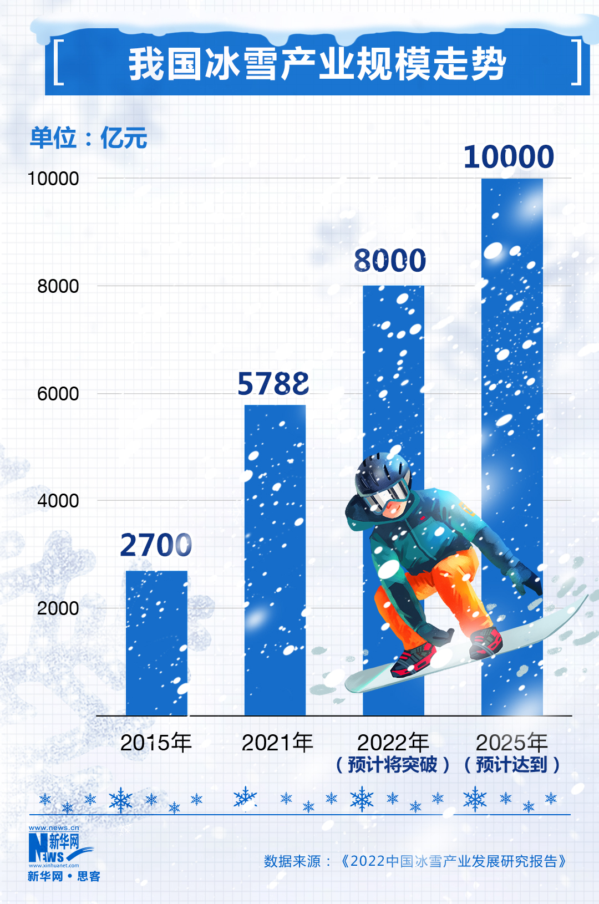

2022年9月1日，亚洲数据集团在北京国际冬季运动博览会上发布了新一年的中国冰雪产业发展研究报告，该报告显示，从15年北京获得2022年冬季奥林匹克运动会与冬季残疾人奥林匹克运动会举办权以来，截止到2021年10月末，我国的冰雪运动参与者达到3.46亿人，整体的运动参与率高达到24%。并且，就2021年全年数据分析看来，我国冰雪产业发展正在从疫情的阴霾中逐步走出，整体规模达到5788亿元，比20年同期相比增长率达到51.88%。就当前的数据来看，预计在2022年，中国冰雪产业规模将会突破8000亿元大关，甚至有望在2025年达到国家体育总局规划目标——中国冰雪产业总规模突破万亿。
图片来源：新华网
截止到2021年末，全国范围内总共拥有2261座冰雪运动相关场地，其中，64%为滑冰场，滑雪场则占据36%的比例。二者的总场地面积相加达到了0.77亿平方米，是全国体育场地总面积的2.26%。就地理位置数据来看，部分南方城市也参与到了这次冰雪浪潮之中。以江苏省的冰雪运动参与人数为例，截止去年年底，江苏冰雪运动参与人数达到2600万人，与山东省数据相同，打破了南方冰雪运动参与率低的传统观念。冬奥会承办城市北京在参与率上更是达到了55.24%，在数据层面仅次于冰雪运动大省黑龙江（57.80%），排名全国第二。冰雪旅游作为冰雪行业的支柱产业，也在21年得到了恢复。随着新冠疫情的逐渐控制，在2021至2022雪季，冰雪旅游为整个行业带来了3900亿元的收入与3.12亿人次的出行，均超过历史最高水平。其中，12%的冰雪旅游客源来自于首都北京，作为冬奥承办城市带头促进冰雪旅游发展，占全国首位。
调查报告还对了“后冬奥时代，中国冰雪该何去何从”做出了规划与展望。报告指出我国冰雪运动潜力极大，基础牢靠，拥有广阔的潜在市场与参与人群。就相关数据统计来看，我国滑雪人口约为1500万人，仅占全国人口数据的百分之一，远低于欧美发达国家数据，就亚洲国家来看，日本9%的冰雪人口和韩国6%的冰雪人口，也远超过我国的比例数据。根据当前的数据来看，以2022年北京冬奥会的顺利举办和政府引导下冰雪运动开展规模的扩大，冰雪资源的不断开发与高新技术的大量实践，未来近10年，中国冰雪运动将处在一个良性的高速发展阶段。
随着北京冬奥会举办一周年这一时间节点的到来，我们对冬奥遗产在赛后的使用进行了一定汇总。
作为2022冬奥会举办地而言，北京以冬奥一周年为时间节点，开展了大量的冬奥纪念活动，在政府引导下，倡导冬奥场馆在一周年之际向广大群众进行全面开放，为了营造浓厚的全民参与氛围，北京地区灵活安排，组织不同形式、不同特色的冬奥主题体育文化活动，这些活动的便利性使广大群众可以在家门口就能参与冰雪运动，充分享受到北京冬奥所带来的红利。同时，这些活动的节庆性质在叠加放大下，吸引了更多的人走进场馆，走近冰雪运动，为冬奥遗产的赛后再利用增添新方法。
作为历史上第一个在赛后仍然留存的冬奥大跳台——首钢滑雪大跳台也举行了隆重的运营活动，首钢园冰雪汇活动吸引了众多来自周边的游客，带动了周边冰雪运动的进一步发展。
冰立方则是依托其独特的优势，以“水冰双驱”成为场馆常态化运营方式。集滑冰、游泳、冰壶三大项目于一身，举办了多项冰雪运动与非冰雪运动活动，“冬奥文化大众体验季”为广大群众提供最专业的场地与竞赛级别的体验；“水立方冬令营”、“冰立方冰迷欢享季”则为冬奥运动推广做出了极大贡献。为首都人民提供了滑冰、游泳、冰壶、乃至乒乓球、舞蹈等多种健身和体验活动。
同时，同属冰上项目的国家速滑馆也积极参与转变，在2月5日开展了“辉煌冬奥”主题展览，向全北京市民开展了群众性冰雪运动嘉年华，并举办了市民速度滑冰系列赛等一系列活动，帮助速度滑冰项目向全北京的冰雪运动爱好者进行推广。
除冰雪运动外，冬奥场地也在积极举办具有当地特色的非冰雪运动活动。由北京冬奥村运行区改造而成的北投奥园1314项目是占地约7.5万平方米的体育主题特色园区，将在系列活动期间举办元宵节文化活动和大众羽毛球赛事。